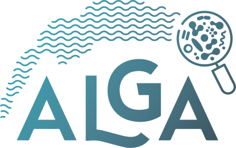

European Interreg France-Switzerland project ALGA
Algal blooms in Lake Geneva, with INRAE (UMR CARRTEL)
1Discrete choice econometrics
Analysis of local population preferences between competing ecosystem services, in the context of adaptation to algal bloom risk.
2Sustainability analysis of social-ecological systems
Integrated synthesis of the ALGA project results, to assess in an interdisciplinary and systemic way the risk of algal blooms in large alpine lakes, its impacts and the governance levers.